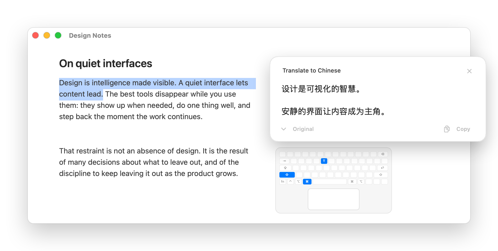
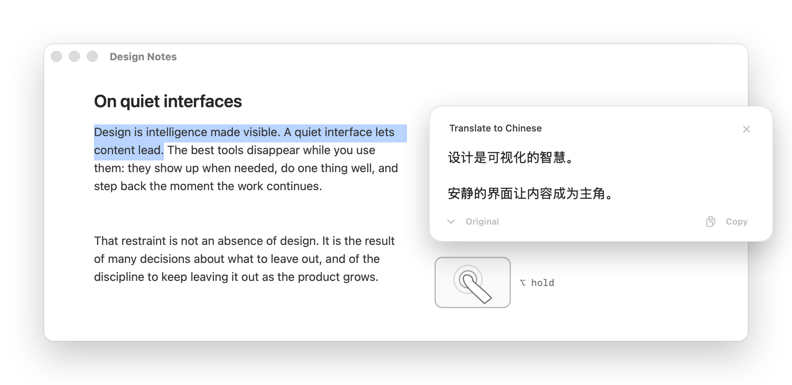
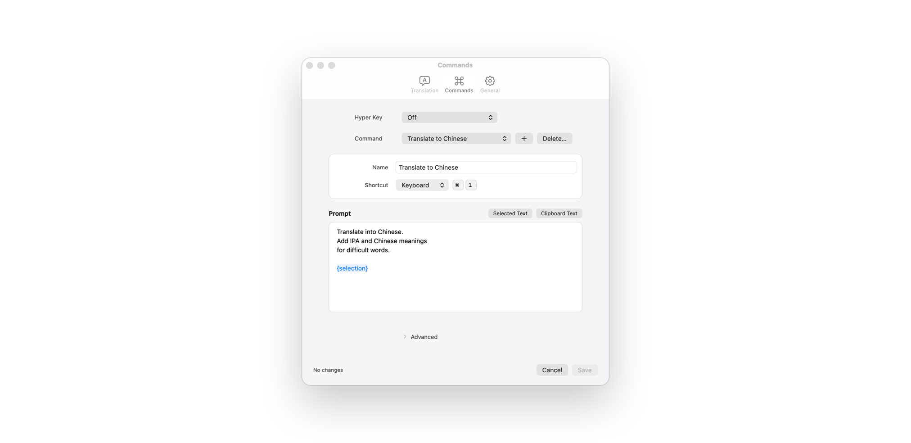

Translate what you select.
Stay where you are.
A quiet menu-bar translator for macOS, running on the model you choose.
How yiyi works



Translation, without changing context.
- Free and open source
- Your own endpoint
- Native macOS